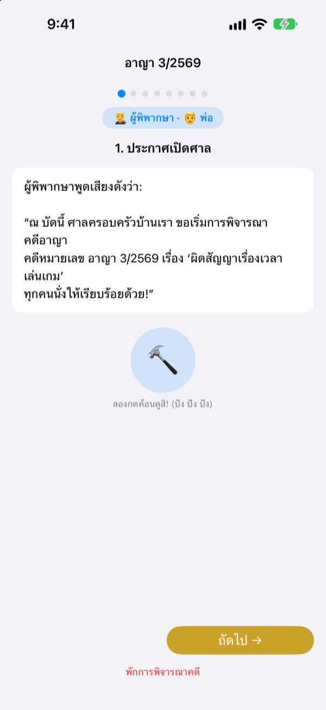
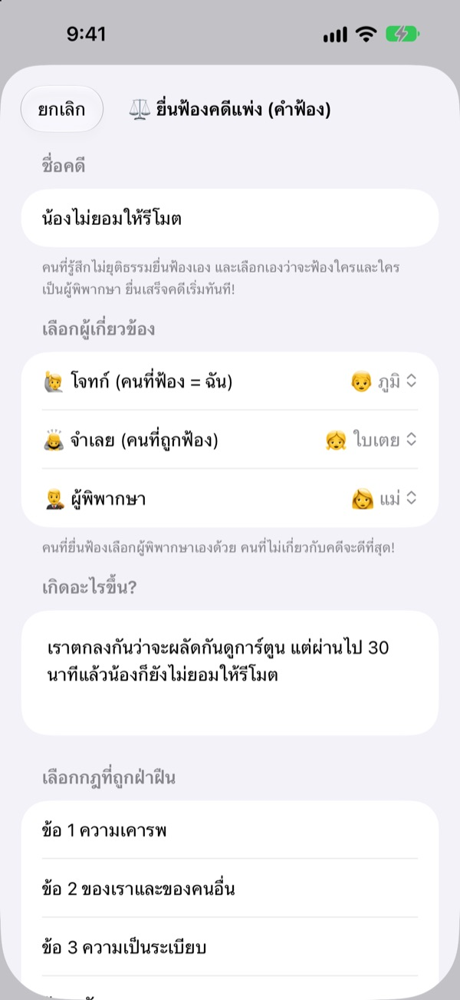
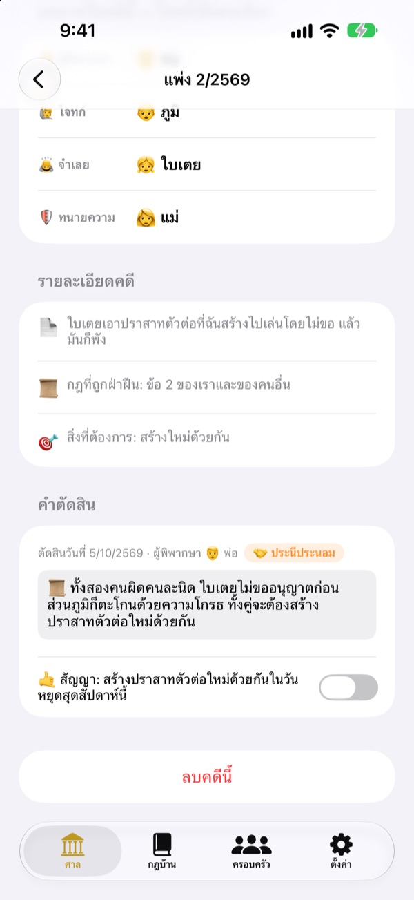
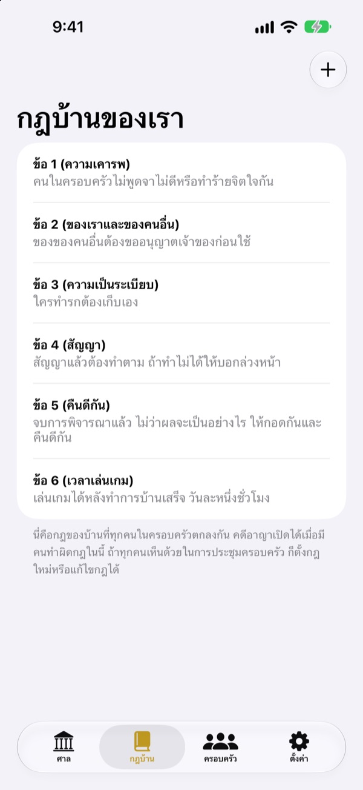

ไม่ยุติธรรมใช่ไหม
อย่าร้องไห้ มาขึ้นศาลกัน
ลูกยื่นฟ้องเองในฐานะโจทก์ ส่วนคนในครอบครัวแบ่งกันเป็นผู้พิพากษาและทนาย ทุกขั้นมีบทพูดบอกว่าถึงตาใครและต้องพูดอะไร ครั้งแรกก็ดำเนินไปได้เหมือนศาลจริง
ไม่มีโฆษณา ไม่มีการซื้อ ไม่ต้องสมัคร บันทึกอยู่ในเครื่องนี้เท่านั้น

ลองเปิดศาลดูสักครั้ง
ลองพิจารณาคดีสั้น ๆ "น้องไม่ยอมให้รีโมต" สลับระดับคำศัพท์ด้านบน เคาะค้อน แล้วลองเปิดตัวจับเวลา มีเสียงด้วย อย่าลืมดูระดับเสียง
"เขาเริ่มก่อน!" เหนื่อยไหมที่ต้องเป็นคนตัดสินทุกครั้ง
พอทะเลาะกัน สุดท้ายผู้ใหญ่ก็เป็นคนตัดสิน คนแพ้ร้องไห้เพราะรู้สึกไม่ยุติธรรม คนชนะก็ไม่รู้ว่าชนะเพราะอะไร ศาลครอบครัวให้ลำดับกับเด็ก ๆ คือเล่าเรื่องของตัวเองให้จบ และฟังอีกฝ่ายให้จบ คำตัดสินจบลงด้วยสัญญา ไม่ใช่แค่การลงโทษ
คนที่รู้สึกไม่ยุติธรรมฟ้องเองได้
ใครรู้สึกไม่ยุติธรรม คนนั้นเป็นโจทก์และยื่นฟ้องเอง จะฟ้องใคร ให้ใครเป็นผู้พิพากษา คนยื่นฟ้องเป็นคนเลือก เด็ก ๆ ฟ้องพ่อแม่ก็ได้
เห็นใครทำผิดกฎบ้าน ก็เป็นอัยการแล้วยื่นฟ้องคดีอาญาได้ ผู้พิพากษาต้องเป็นคนที่ไม่ใช่โจทก์หรือจำเลยเท่านั้น

คำตัดสินจบด้วยสัญญา
พร้อมคำตัดสิน ให้ตั้งสัญญาหรือบทลงโทษ แล้วติ๊กจนกว่าจะทำได้ คดีที่จบแล้วจะสะสมเป็นคดีตัวอย่างของบ้านเรา
บทลงโทษแนะนำจะเริ่มจากการแก้ไขให้เหมือนเดิม และการชดเชยความรู้สึก ซึ่งเน้นซ่อมความสัมพันธ์มากกว่าลงโทษ การลดเวลาเกมหรือทีวีเป็นทางสุดท้าย

กฎบ้านเรา เราตั้งเอง
เขียนกฎที่ทั้งบ้านตกลงกัน เช่น ให้เกียรติกัน เก็บของ รักษาสัญญา เป็นมาตรา แล้วเพิ่มหรือแก้ได้ทุกเมื่อ ในคำฟ้องก็เลือกมาตราที่ถูกฝ่าฝืนได้
ส่วนเรียนรู้เรื่องศาล อธิบายว่าผู้พิพากษา โจทก์ อัยการ และทนาย ทำหน้าที่อะไร และการพิจารณาคดีเป็นไปตามลำดับอย่างไร

เริ่มได้ในสามขั้น
- 1
เพิ่มคนในครอบครัว
ใช้แค่ชื่อกับอีโมจิ ไม่ต้องมีบัญชี
- 2
ยื่นฟ้อง
ไม่ยุติธรรมยื่นเป็นคดีแพ่ง ผิดกฎบ้านยื่นเป็นคดีอาญา แล้วเลือกผู้พิพากษา
- 3
เปิดศาล
พูดตามบท คุมเวลาด้วยตัวจับเวลา แล้วเคาะค้อนประกาศคำตัดสิน
คำที่เปลี่ยนไปตามวัยของลูก
- ผู้พิพากษา
- คำง่าย ๆ: กรรมการ · ศัพท์ศาล: ผู้พิพากษาหัวหน้าคณะ
- โจทก์
- คำง่าย ๆ: คนที่รู้สึกไม่ยุติธรรม · ศัพท์ศาล: โจทก์
- จำเลย
- คำง่าย ๆ: คนที่ต้องตอบ · ศัพท์ศาล: จำเลย
- อัยการ
- คำง่าย ๆ: คนที่แจ้งเรื่อง · ศัพท์ศาล: อัยการ
- จำเลย
- คำง่าย ๆ: คนที่ต้องตอบ · ศัพท์ศาล: จำเลย
- ทนายความ
- คำง่าย ๆ: คนช่วยพูด · ศัพท์ศาล: ทนายความ
- แพ่ง
- คำง่าย ๆ: ไม่แฟร์ · ศัพท์ศาล: แพ่ง
- อาญา
- คำง่าย ๆ: ผิดสัญญา · ศัพท์ศาล: อาญา
เลือกระดับคำศัพท์ในการตั้งค่า คำบนหน้าจอและในบทพูดจะเปลี่ยนพร้อมกันทั้งหมด เด็กอนุบาลลองเริ่มจากคำง่าย ๆ เด็กประถมลองเริ่มจากมาตรฐาน
คำถามที่พบบ่อย
เล่นได้ตั้งแต่อายุเท่าไร
เด็กที่อ่านหนังสือได้เล่นกับพ่อแม่ได้เลย มีบทพูดและคำแนะนำ ถ้าตั้งระดับคำศัพท์เป็นคำง่าย ๆ แล้วให้ผู้ใหญ่อ่านให้ฟัง เด็กเล็กกว่านั้นก็ร่วมเล่นได้
ฟรีจริงไหม
ฟรีจริง ไม่มีโฆษณา และไม่มีการซื้อเพื่อปลดล็อกฟีเจอร์ ในการตั้งค่ามีทิปสนับสนุนนักพัฒนา จะให้หรือไม่ก็ได้ และไม่ได้เปิดหรือล็อกฟีเจอร์ใด ๆ
ต้องต่ออินเทอร์เน็ตไหม
ไม่ต้อง การพิจารณาคดีและบันทึกทั้งหมดใช้งานแบบออฟไลน์ได้ ต้องใช้อินเทอร์เน็ตและลงชื่อเข้า iCloud เฉพาะตอนส่งความคิดเห็นจากการตั้งค่า
บันทึกเก็บไว้ที่ไหน
ข้อมูลครอบครัว กฎบ้าน การพิจารณาคดี และคำตัดสิน เก็บไว้ในเครื่องเท่านั้น ไม่ส่งขึ้นเซิร์ฟเวอร์ สิ่งที่ถึงมือนักพัฒนามีเพียงความคิดเห็นที่คุณส่งเอง และสถิติการใช้งานแบบไม่ระบุตัวตน
สำรองหรือย้ายไปเครื่องอื่นได้ไหม
ใช้บันทึกข้อมูลในการตั้งค่าเพื่อส่งออกเป็นไฟล์ แล้วใช้โหลดข้อมูลในอีกเครื่องเพื่อเปิดไฟล์นั้น ข้อมูลจะกลับมาเหมือนเดิม ไฟล์สำรองจากเวอร์ชันเว็บเดิมก็โหลดได้
ใช้บน iPad ได้ไหม
ได้ ใช้ได้ทั้ง iPhone และ iPad จอใหญ่เหมาะกับการนั่งล้อมวงพิจารณาคดีกันทั้งบ้าน
ถ้าบทลงโทษหนักเกินไปล่ะ
ตอนที่อัยการเสนอบทลงโทษ บทพูดจะเตือนว่า "อย่าให้หนักเกินไป ต้องทำได้จริง" บทลงโทษแนะนำก็เริ่มจากสิ่งที่ซ่อมความสัมพันธ์ เช่น แก้ไขให้เหมือนเดิม ชดเชยความรู้สึก หรือลองคิดแบบอีกฝ่าย
อยากลบข้อมูลทั้งหมด
ลบแอปแล้วบันทึกทั้งหมดในเครื่องจะหายไปด้วย ไม่มีบันทึกออกไปนอกเครื่อง จึงไม่มีที่ไหนเหลือเก็บไว้ ถ้าอยากลบความคิดเห็นที่เคยส่งมา ส่งอีเมลบอกได้เลย
เจอบั๊ก มีไอเดีย หรืออะไรก็ตาม เขียนมาที่ leeo@kakao.com ได้เลย หรือส่งความคิดเห็นจากการตั้งค่าในแอปก็ได้